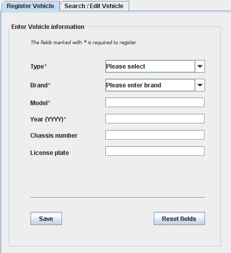
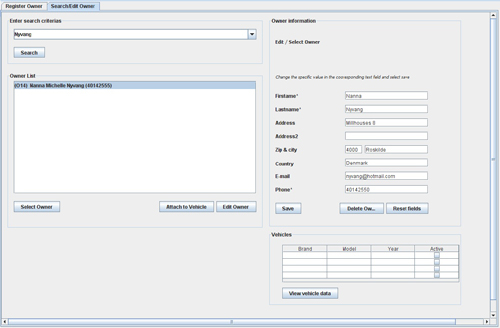

The Vehicle part of the system covers 3 (at the moment) different types of vehicles. These are ATV, Motorbike and Other.
Please note, that more can be added by simply typing into the Vehicle drop down box.
In the vehicle interface, vehicles are strangely enough beeing created in the system.
Under the second tab, we can either search or edit a vehicle that is founf in the database.
The first pane - Create vehicle - have some different fields where only the ones marked with * are allways required to save.
The illustration is shown below:

The Owner interface is very similar to the Vehicle, as they basically are doing the same functions just with different names.
Their biggest difference is the names of the fields that contain the specific information.
The second pane - Search/Edit Owner - have a little different layout than the similar Create Vehicle, as the options here are
increased a little. The illustration is shown below:

As You might have spotted, we now have the abillity to attach a Vehicle to an Owner. This is a very important core feature for
the rest of the system. As we ofcourse want to know who owns the Vehicle.. :)
This was a brief walk-through for the Create Vehicle and Order features. In the next chapter we will take a look at the Order part.